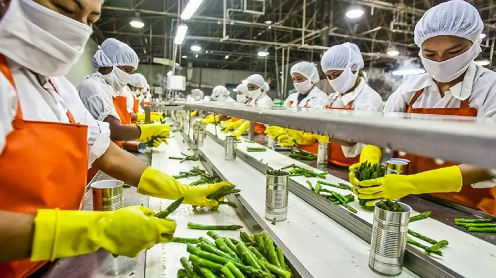

The main objectives of the scheme are to encourage model technology based projects and quality enhancement of agriculture produce, to encourage exports, to create skill manpower for agro and food processing and employment generation through small and medium agro and food processing units in rural areas.
Benefit
Financial Assistance:
i.30% subsidy for construction of factories and machines of Processing Unit (Civil work for housing processing unit) and maximum limit of Rs.50.00 lakhs.
ii.Subsidy will be given on the basis of “Credit Linked Back ended subsidy” in two similar instalments, a) After completion of the project and b) After full commercial production.
iii.Loan amount should one and half times more than subsidy.
Eligibility
1.The beneficiary should have age above 18 years.
2.The beneficiary should have Aadhaar Card/ Pan Card .
3.The beneficiary should have Good Bank CIBIL Score.
4.The beneficiary have 7/12 certificate and 8 –A certificate or Lease documents.
Documents Required
1. Beneficiary Application (Annexure II)
2. Bank Loan Sanction Letter (Original)
3. Bank Appraisal (Original)
4. 7/12, 8A (Original) or Agreement
5. PAN card of individual/business, Aadhaar card
6. Enterprise Registration Certificate (Udyam Registration)
7. Detailed Project Report (DPR) of the project (Original)
8. A flow chart of the project's process output
9. Notarized Agreement to be submitted for Project Construction (Annexure-III)
10. Construction Blue Print (Bank Attested)
11. Construction Budget (Bank Attested)
12. Machinery Quotation (Bank Attested)
13. Pre-project feasibility study report (Annexure-V)
14. Recommendation Letter of District Level Project Implementation Committee (Annexure- VI)
15. Audit reports for last three years (Only for Upgradation, Expansion and Modernization Projects)
Application Process:
Step 01: Applicant (Entrepreneur),Proposal submitted with bank loan approval to District Superintendent Agriculture Officer
Step 02: Pre-project feasibility study through the Deputy Director of Agriculture, District Superintendent Agriculture Office/Sub-divisional agricultural Officer and with the recommendation of the District Project Implementation Committee.
Step 03: Major Document Verification for Grant Payment- CA Certificate, Original Bank Loan Sanction, Original Bank Appraisal, CE -Civil & Mechanical, Bank Reserve fund Acc. Details, recommendation of District level Project Implementation Committee and strategic inspection report etc.
Step 04:In-principle approval of eligible projects in Commissionerate level Project Approval Committee meeting.
As per the recommendation of the District level Project Implementation Committee, after the completion of the project construction, the first phase and the second phase, when the project is in full production capacity, the subsidy will be deposited in the reserve fund account of the bank.